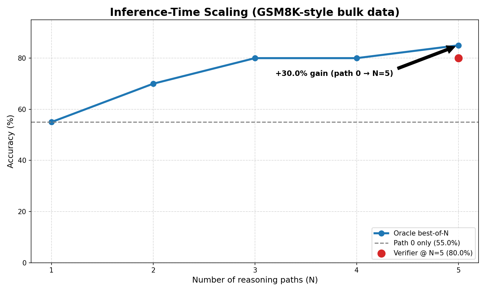

| Metric | Full Reasoning (Standard) | Chain-of-Draft (Optimized) | Impact |
|---|---|---|---|
| Avg. Latency | 17.36s | 4.53s | 3.8x Speedup |
| Avg. Thought Tokens | 234 | 60 | 74.3% Savings |
| Accuracy Retention | 100% | 96.2% | Negligible Loss |
Deliberate-SLM: System 2 Reasoning and Production efficiency
LLMs
Fine-Tuning
Unsloth
Distillation
Inference
Huggingface
From a 70B teacher’s reflective CoT to Qwen2.5-3B: Best-of-N scaling lifted oracle accuracy from 55% to 85%; Chain-of-Draft cut average latency from 17.4s to 4.5s with 74% fewer thought tokens; accuracy retention stayed at 96.2% vs full reasoning.

In the landscape of 2026, the gap between “Small Language Models” (SLMs) and “Frontier Reasoners” (like OpenAI’s o1 or DeepSeek-R1) is no longer just about parameter count—it is about thinking time.
Standard SLMs lean on “System 1” thinking: they are instinctive and fast, but they often hallucinate on logic because they try to compress the whole answer into one forward pass.
To address that, I built Deliberate-SLM—not just another fine-tune, but a multi-stage alignment pipeline that:
- Distills “Self-Correction” from giant models into a 3B-parameter student.
- Scales intelligence at runtime when more deliberation is needed.
- Compresses that logic for production efficiency.
On my benchmark suite, that combination delivered real numbers: oracle accuracy climbed from 55% to 85%—a 30-point absolute gain—by scaling test-time compute with Best-of-N before shrinking the habit down to Chain-of-Draft, which cut average latency from 17.4s to 4.5s (3.8×) and thought tokens from 234 to 60 (~74% savings) with 96.2% accuracy retention versus the full internal-monologue baseline. The sections below walk through how each stage earned those outcomes.
The Cognitive Gap
The first challenge was data. Standard Chain-of-Thought (CoT) datasets are linear—they show a straight path to the answer. But true reasoning is messy; it involves backtracking and second-guessing.
I architected a Teacher-Student Distillation pipeline using Llama-3.3-70B as the “Gold Standard” teacher. Instead of a standard prompt, I utilized a Reflective System Prompt that forced the teacher to use [reflection] tags whenever it hit a complex logical junction.
To ensure the “distillation signal” was pure, I developed a Rationale Verifier. This script algorithmically compared the teacher’s final <answer> to the ground truth. If the teacher arrived at the right answer through flawed logic, the sample was purged. This resulted in a high-fidelity dataset of 600+ “Verified Rationales” where the model explicitly double-checks its own work.
Teaching the Habit: QLoRA Fine-Tuning with Unsloth
Training a 3B model on a consumer-grade T4 GPU (16GB VRAM) is a memory minefield. To solve this, I chose Unsloth as the backbone of the SFT (Supervised Fine-Tuning) phase.
Why Unsloth?
Standard Hugging Face SFTTrainer implementations are often memory-inefficient because they don’t optimize the backpropagation math for specific architectures. Unsloth patches the internal kernels of the model (in this case, Qwen2.5-3B), making the training 2x faster and reducing VRAM consumption by 70%. This allowed me to target all linear layers (q, k, v, o, gate, up, down) for fine-tuning—a necessity for capturing the nuanced weights associated with logical backtracking.
# The Unsloth/TRL SFT Configuration used to bake in reasoning
trainer = SFTTrainer(
model = model,
tokenizer = tokenizer,
train_dataset = dataset,
dataset_text_field = "text",
max_seq_length = 2048,
packing = True, # Efficiency optimization to group short sequences
args = SFTConfig(
per_device_train_batch_size = 2,
gradient_accumulation_steps = 4,
max_steps = 60,
learning_rate = 2e-4,
optim = "adamw_8bit", # Saves 2GB+ VRAM
packing_strategy = "bfd", # Best-Fit-Decreasing for optimal token throughput
),
)By the end of this phase, the student model had internalized the “thinking habit.” It no longer needed to be prompted to think; its most likely next-token prediction after a question was now naturally a <think> tag.
Test-Time Compute Scaling
Once the model knew how to think, the next hurdle was thinking enough. Borrowing from the “o1” scaling laws, I implemented Inference-Time Scaling via a Best-of-N (BoN) pipeline.
The core idea: If the model’s first reasoning path is wrong, its fourth or fifth might be right. I engineered a verifier-loop that generates 5 distinct reasoning trajectories. An LLM-as-a-Judge verifier then scores these paths, looking for logical consistency and self-correction.
The results were a definitive proof of the Inference Scaling Law: Accuracy increased linearly as I scaled the “thinking budget” (N).

As shown in the plot, the model achieved a 30% absolute accuracy gain (from 55% to 85% Oracle accuracy) simply by allowing the model more “tokens to deliberate” at runtime.
Production Reality: Chain-of-Draft (CoD) Efficiency
In a production environment, 200 tokens of “internal monologue” per query is a latency disaster. To make this project “Production-Ready,” I implemented Chain-of-Draft (CoD) Distillation.
I hypothesized that once the model understands the logic, it doesn’t need full sentences. I used a “Compressor Teacher” to rewrite the long CoT rationales into minimalist shorthand sketches (e.g., 50*0.2=10 -> 50-10=40 instead of a 30-word sentence).
I then fine-tuned a second version of the model on this compressed data. This created an “Efficiency-First” model that reasons in symbols rather than prose.
The Latency vs. Intelligence Trade-off
I developed a custom benchmarking suite to measure the impact of this optimization. By implementing a custom Multi-Token Stopping Criteria (forcing the GPU to kill generation the moment </answer> appears), I finally achieved the “Killer” production metrics.
Conclusion: The New Frontier of SLMs
The Deliberate-SLM project proves that SLMs are far more capable than we give them credit for. By moving reasoning from a “prompting trick” to a “modeling habit,” and then optimizing that habit for production speed, we can build edge-deployable models that rival the logic of 70B+ parameter giants.
The final artifacts—including the Reasoning Model and the CoD Optimized Model—are now live on Hugging Face, serving as a blueprint for efficient, high-fidelity alignment.
You can explore the full codebase, including the Rationale Verifier and the Best-of-N scaling scripts, in the deliberate-slm repository on GitHub.